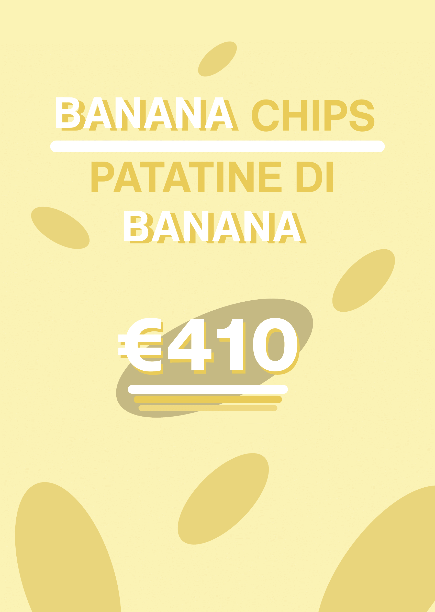
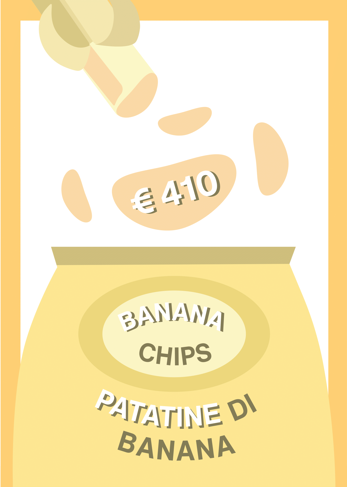
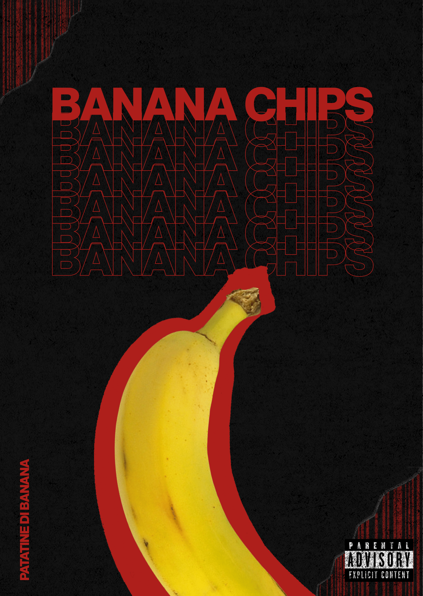

Layout
Alcuni dei lavori grafici realizzati per il corso di Layout e Tecniche di Visualizzazione. Principali programmi utilizzati: Ilustrator, Photoshop, InDesign.


Due esempi di annunci pubblicitari realizzati prendendo come riferimento un annuncio mal progettato, l’obbiettivo era quindi di realizzarli in stili e modi differenti.

Realizzazione della copertina di un album musicale utilizzando come riferimento l’annuncio mal progettato.